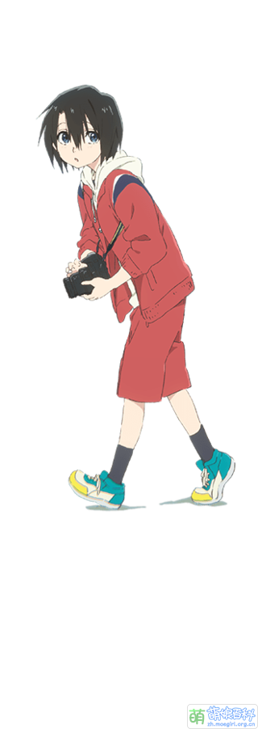

動態網頁作業 WEEK2
What does the term 'trap' mean?It refers to a situation where a femboy's appearance is so convincingly feminine that they are often mistaken for a girl.
Congratulation!!!! You're right!
Q8: Is the character a trap?

[Yes]
[NO]